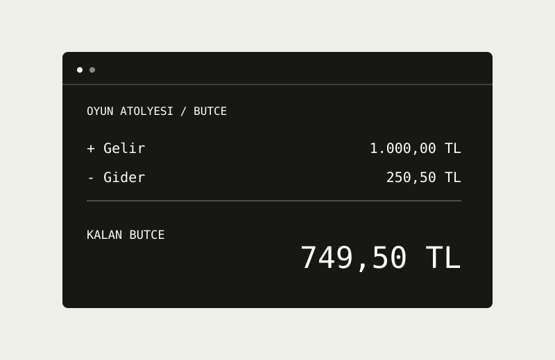
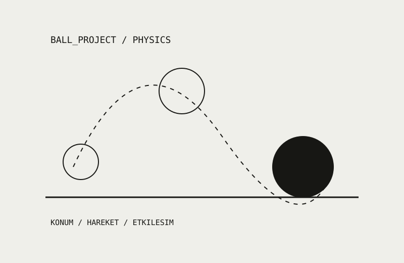
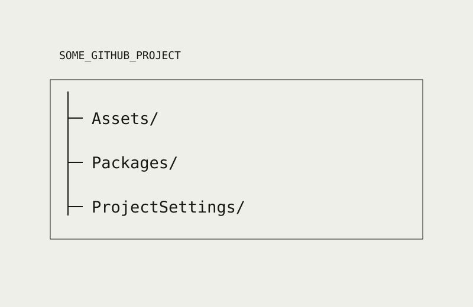
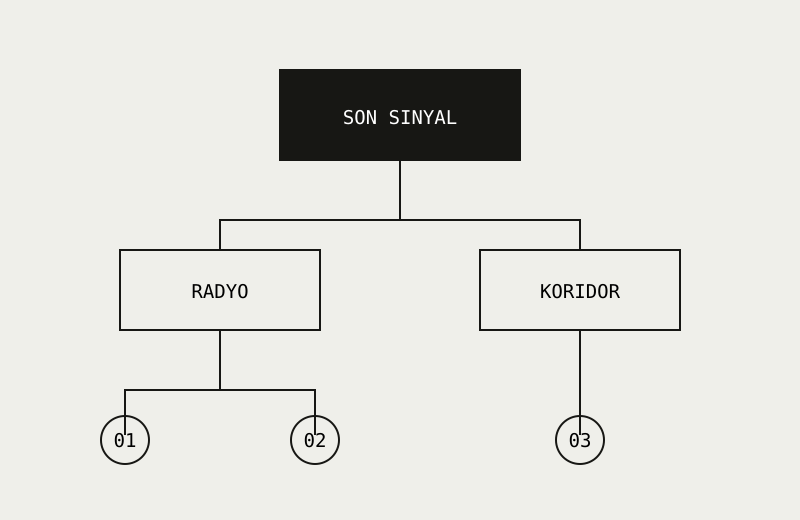
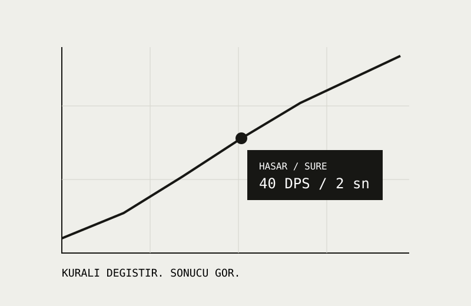

Oyun Atölyesi
Bir oyun ekibinin gelirini, giderini ve kalan bütçesini takip eden Python uygulaması.
Çalışmanın odağı: Girdi doğrulama, fonksiyonlar ve CSV kaydı.
02 / PROJELER
Bir Python uygulaması, üç mevcut GitHub projesi ve üç yeni tarayıcı denemesi.
7 çalışma gösteriliyor.

Bir oyun ekibinin gelirini, giderini ve kalan bütçesini takip eden Python uygulaması.
Çalışmanın odağı: Girdi doğrulama, fonksiyonlar ve CSV kaydı.

Unity proje deposu. README dosyasında Physics_GAD1004 başlığı bulunuyor.
Çalışmanın odağı: Physics_GAD1004: Unity proje yapısı ve fizik konulu çalışmanın kaynakları.

GitHub profilimde bulunan, VFX klasörüyle paylaşılan araç oyunu proje deposu.
Çalışmanın odağı: Görsel efekt çalışmasını proje dosyalarıyla birlikte sunmak.

Unity proje klasörlerini içeren, GitHub profilimdeki mevcut çalışma deposu.
Çalışmanın odağı: Bir Unity projesinin dosya yapısını ve kaynak paylaşımını incelemek.

Terk edilmiş bir istasyonda iki seçimle değişen kısa bir etkileşimli anlatı.
Çalışmanın odağı: Karar ağacı ve oyuncuya geri bildirim.

Hasar, saldırı aralığı ve hedef canı arasındaki ilişkiyi deneyen küçük bir araç.
Çalışmanın odağı: Sınır değerleri, hesaplama ve anlaşılır sonuçlar.

Öğrenme, deneme ve ustalık adımlarından oluşan etkileşimli seviye akışı.
Çalışmanın odağı: Mekân akışı ve aşamalı zorluk tasarımı.
Bu aramaya uygun çalışma bulunamadı. Başka bir kelime deneyin veya Tümü filtresini seçin.